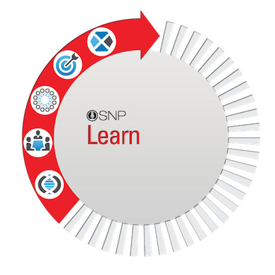

Learn
We start with your story. Taking a journalistic approach, we ask you about your culture and values, as well as your organizational structure and business objectives.
This is also our opportunity to be transparent about our processes and aspirations. Basically, we search the world for good people, and help them make their truth persuasive.
